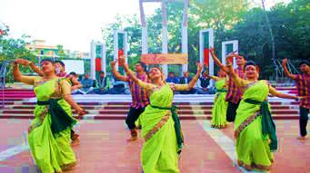

<p style="text-align: justify;">Shaheed Minar is a national monument in Dhaka, Bangladesh, established to commemorate those killed during the Language Movement demonstrations of 1952.On February 21, 1952, dozens of students and political activists were killed when the Pakistani police force opened fire on Bengali protesters who were demanding equal status to their native tongue, Bangla. The massacre occurred near Dhaka Medical College and Ramna Park in Dhaka.Today, the Shaheed Minar is the centre of cultural activities in Dhaka. Every year, the Language Movement is remembered at the monument.</p>
